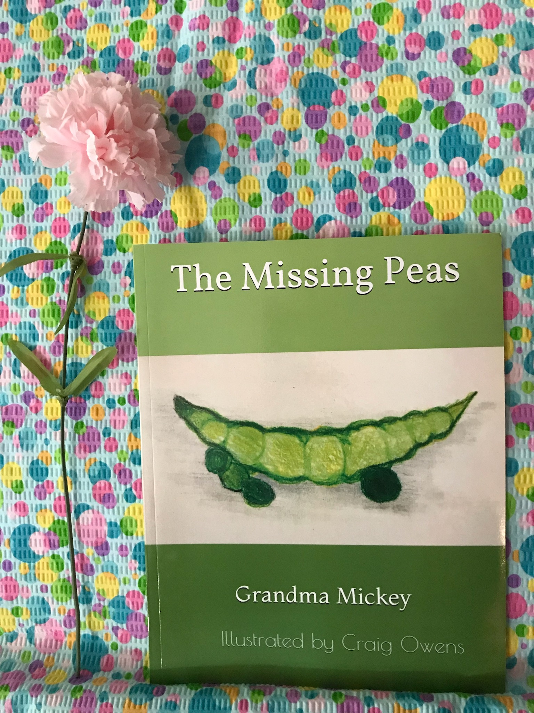

The Missing Peas
Each and every day, Grandpa drives from the city to his son’s house in the country to tend to his garden. There is much work involved in growing fruits and vegetable successfully, but Grandpa definitely has a “Green Thumb” and thoroughly enjoys the hours of work. His grandchildren, Jeff and Matt, eagerly await his arrival each day and scurry out to help him. One summer day, something unforeseen occurs. Read and discover this surprise and what they do about it.
In reality, Grandpa is actually my father-in-law and Jeff and Matt are my children. They did actually wait each day for Grandpa to arrive and spent time with him in his “country garden”.
I hope this children’s book, inspired by true events, will be an inspiration to other children and they will discover the joy of the friendship between a grandchild and grandpa.